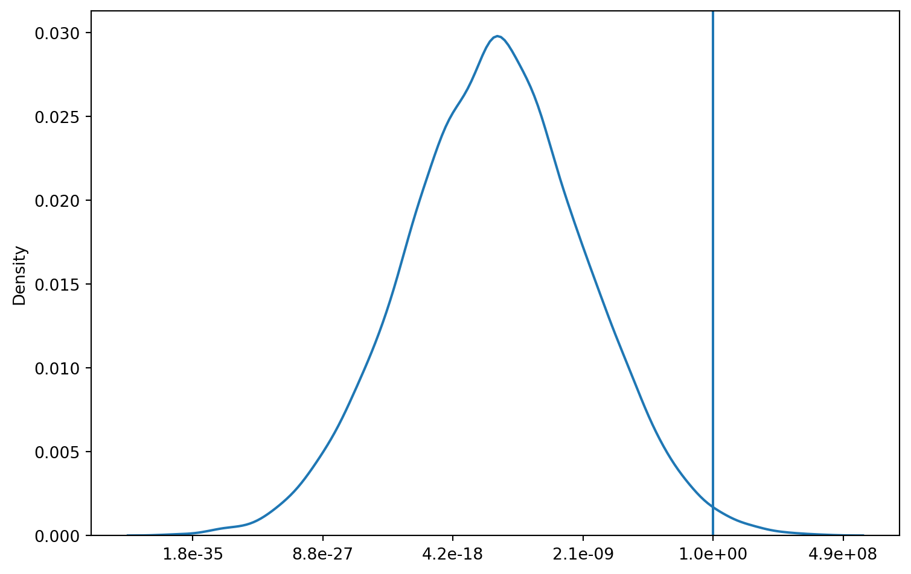
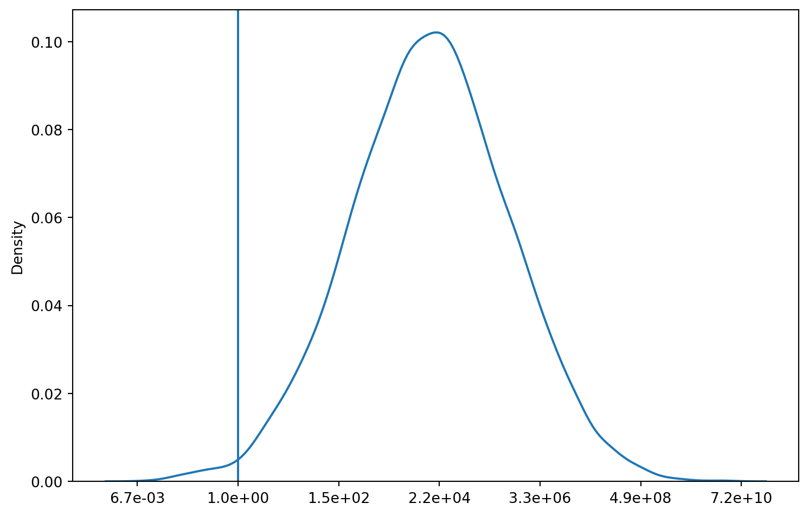

Introduction
How risky should you be when investing. A commom phrase when people ask that question is that it depends on your personal risk tolerance. But I don’t think this really answers the questions or is actually helpful. When startign to invest you haven’t been through a crash, so you have no idea how you will react when you experience a huge drop/ - How much should I bet - There are problems with naive EV optimization
Losing a Winners Game
Let’s starts with a simple toy example. Say there is a fair coin and if it lands heasd you double your bet and if it landas tails you lost 60% of your bet. Now the arithmetic average of our game is 1.2 meaning on average we will get a 20% return in our bet. This is seems like a very profitable game for us!
Lets us now simulate the results of tossing the coin 300 times. And since we can expect a 20% return lets bet our entire bankroll on this game. After running 10,000 simulations of 300 coin flips our average is 2,903 times our starting wealth. So, our intuition was correct this is an extremely profitable game we should probably take out a loan so we can win more!
Before we do that though let us take a look at the distribtuion of outcomes. Just to make sure that tail events are not to disatrous.
So playing this game gives us a very high chance of ending up broke. But we still had a very high expected value so whats going on. In essence there are some sample paths where a simulation ended making an obscene amount of money that drags the expecged value up. But the vast majority of players in this game will lose everything.
Gurantee Not losing
- Introduce Kelly and geomtric mean
- Apply kelly to pervious example
- The risk of going broke is not worth the return
As we have shown there are scenarios where a bet can have a positive expected return, but its long run return converges to zero. However, if we use the geometric mean instead of the arithmetic mean we get a better estimate of our long run return.
The arithmetic mean is the mean that most people think of when they think of the mean. Its the sum of all the values divided the sample size. The geometric mean is when we mutiply all our values and take the \(n^{th}\) root of the product. The geometric mean better captures the multiplicative nature of returns. So if we look at our toy example we get a geometric mean of \(.89\) meaning our CAGR for this game is \(-10\%\). See how this is more in line with what are simulations show. A ten percent decrease over 300 trials will wipe out your entire bankroll.
So now that we know to judge our games off of their geometric mean instead of the arithmetic mean how can we use this to turn our game into a proftiable one. Let’s change our strategy, instead of betting our entire bankroll lets only bet a fraction. Figure _ shows the imulation results of the same game but this time only betting \(30\%\) of are bankroll each turn. These are radically different results! Instead of being gurantted to lose money we are almot guranteed to walk away with a sizable profit.

Why are the results so different? Its becuase we increased the geometric mean by limiting our losses. This increase our geometric mean from \(.89\) to \(1.08\). And these returns compounded over 300 trials will give you drsatically different results.
The reason that limiting your losses can have such a huge impact on your long run returns is that it allows you to survive longer. In our toy game you have an edge you can earn more than you lose on each flip. But, the loses can be catosphoic that a couple of them stop you from playing. By limiting your loses it allows you to keep playing the game in which you have an edge and compound your winnings over time.
Now to determine what fraction of our bankroll to bet on a game we use something called the Kelly Criterion. Its a formula the gives you the fraction of your bankroll to bet to maximize your geometric return.
Conclustion
- Talk about survival
- Kelly philoshpy
Now all we have seen in this post is simepl toy examples where the probabilites are known and the returns discreate. You may wonder how these ideas can be applied to sometinhg like the stock market. I think that take away is less about what the exact fraction you should put on each invetsment and more on guratteing your ability to stay in the market.
No expected return is worth it if the risk is losing your money. An investor needs a solid amount in their emergency fund to gurantee that can stay in the market and allow that money to compound.